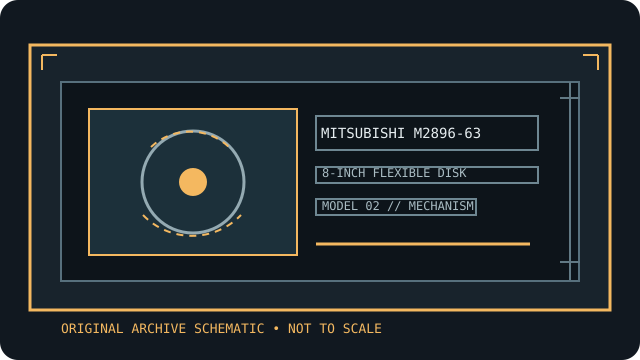

[ INDIVIDUAL COMPONENT // FLOPPY DRIVES ]
Mitsubishi M2896-63 8-inch floppy drive
This record identifies a real, model-specific 8-inch diskette mechanism. Format capacity and host fit depend on the documented revision, interface options, controller, recording mode, and media; values are not inferred from form factor alone.

IDENTIFICATION NOTE: Mitsubishi M2896-63 is a bare mechanism/drive model, not a generic PC floppy peripheral. Match the full label, PCB revision, connector and voltage configuration to the cited manual before connecting or servicing it.
Model specifications
| Catalog subcategory | 8-inch floppy mechanisms |
|---|---|
| Exact model / family | Mitsubishi M2896-63 8-inch floppy drive |
| Disk format and capacity | 8-inch double-sided, double-density class. Capacity is format-specific: use the OEM recording table and the target controller’s sector geometry; do not transfer a capacity claim from M2894-63 or another suffix. |
| Host interface | The OEM manual documents the signal connector, DC power connector, and signal timing for this variant. Verify connector orientation, pinout, and installed option links from the manual and board before connection. |
| Data rate | The OEM interface and recording tables govern data rate; the supported FM/MFM mode and clock must match the chosen controller. No single data rate is safe to infer from the 8-inch size alone. |
| Drive select / jumpers | Use the customer-installation-options and drive-select tables in the M2896-63 OEM manual. Record all option shunts before setting select, head-load, side-select, termination, or ready behavior. |
| Dimensions / mounting | Check the M2896-63 physical-interface and mounting drawings for the specific frame dimensions and mounting pattern. Keep chassis clearance and airflow consistent with the service manual. |
| Power requirements | The OEM manual’s power connector/power specification is authoritative. This is not a generic PC 34-pin drive: identify all required rails and current from the exact manual and unit marking before powering. |
| Controller / host compatibility | Use with a host controller designed for its documented 8-inch double-density interface and compatible disk format. IBM-style media geometry alone does not establish controller timing or interchangeability. |
Model-specific compatibility checks
- Record the complete model suffix, serial/date code, board revision, connector keying, and all drive-select or option links before installation.
- Confirm controller signaling, line termination, host drive-select assignment, recording density, sector geometry, and the manual’s power connector pinout as a single compatible configuration.
- Do not connect by connector shape alone. An 8-inch drive may require non-PC signal conventions, additional DC rails, or a mains-rated supply; follow the model documentation.
Preservation and safety notes
Retain the matching OEM and service manual with the drive. Avoid unverified jumper changes, live-board probing, and alignment by eye; inspect disks first and image originals read-only with a verified controller configuration.
For archival work, preserve original media in its native format, make a verified read-only acquisition first, checksum retained copies, and log the drive, controller, software, media condition, and any service or conversion performed.
Manufacturer manuals & archive sources
- Mitsubishi M2896-63 OEM Manual, January 1984 (Internet Archive)Model-specific OEM source for operation, interface, options, specifications, and installation.
- Mitsubishi M2896-63 Service Manual (Internet Archive)Separate service reference for the M2896-63 family; check exact revision applicability.
Consult the exact model/revision manual before applying electrical or service values. Family references are useful only where their coverage matches the marked unit.